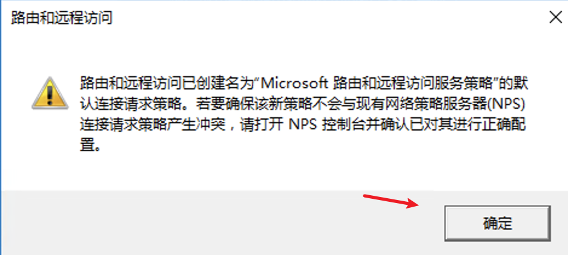
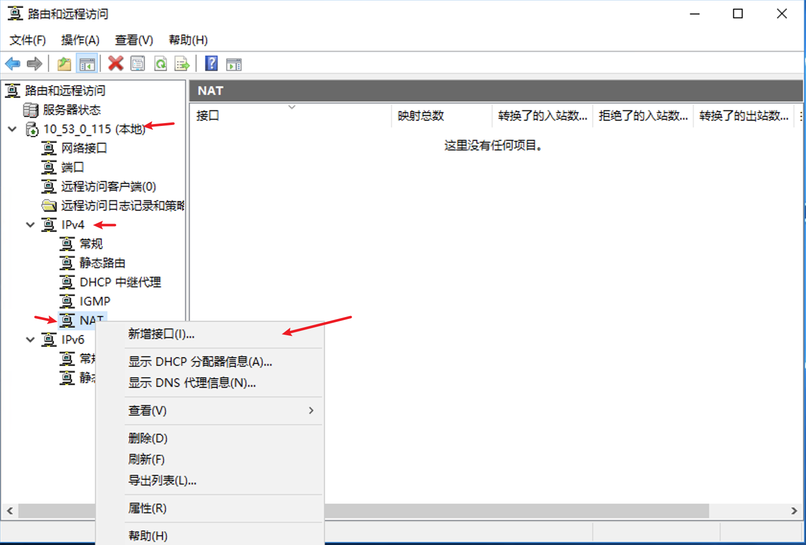
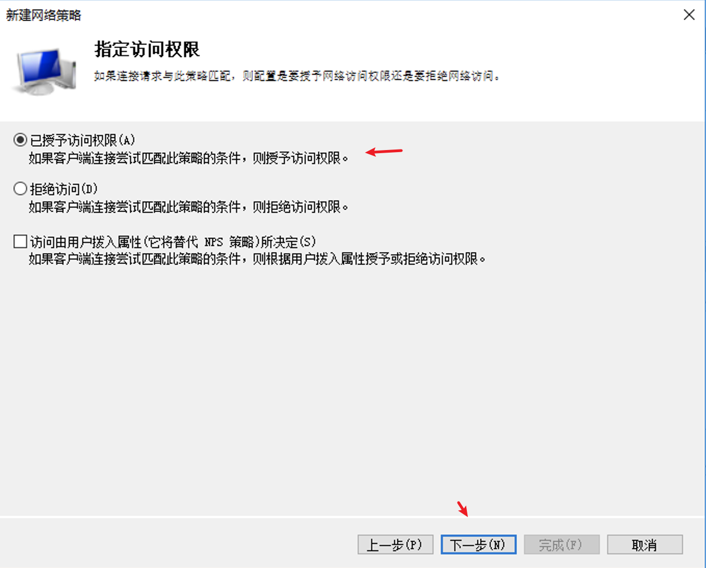
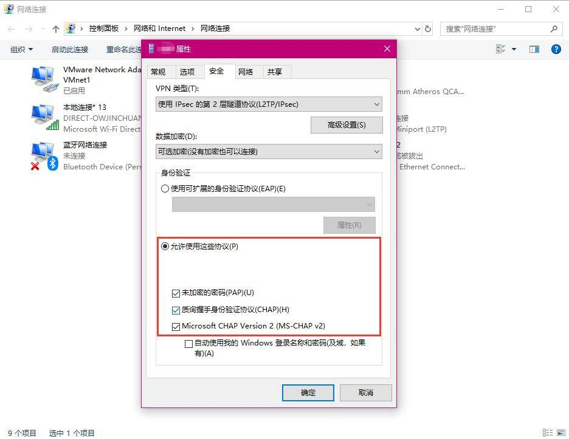

前置准备
- Windows Server 2012/2016版服务器
该文以腾讯云创建的Server 2016服务器为例
需要先放通服务器安全组端口，以腾讯云服务器为例：
以及关闭服务器的防火墙。
配置步骤
连接远程服务器，打开服务器管理器。
点击添加角色和功能，进行下图所示配置。
开始之前直接点击下一步
安装类型直接点击下一步
服务器选择直接点击下一步
服务器角色增加网络策略和访问服务以及远程访问
选择添加功能
勾选后点击下一步
功能默认即可，直接点击下一步
网络策略和访问服务直接点击下一步
远程访问直接点击下一步
角色服务增加DirectAccess和VPN(RAS)以及路由
选择添加功能即可
勾选后点击下一步
Web服务器角色直接点击下一步
角色服务默认即可直接点击下一步
确认安装
点击安装后等待安装完毕关闭即可。
打开服务器管理器，点击工具，选择路由和远程访问
右键本地服务器，选择“配置并启用路由和远程访问”，启动配置向导。
点击下一步
选择自定义配置
全部勾选，并点击下一步
点击完成
如出现该提示直接点击确定

点击启动服务
展开本地服务器，展开IPv4，右键NAT，选择新建接口

选择以太网，点击确定
勾选公用以及启用NAT，如图所示，点击确定
再次展开本地服务器，展开IPv4，右键NAT，选择新建接口
选择内部，点击确定
勾选专用，点击确定
配置本地服务器属性
点击IPv4标签页为远端连接分配IP地址池
再次配置本地服务器属性
选择安全标签页，配置允许L2TP策略选项，并填入预共享密钥，点击确定
务必记住该密钥，后续需要填写
点击确定
打开服务器管理器，点击工具选择计算机管理
展开本地用户和组，选择新建组
展开本地用户和组，选择新用户
点击新建的用户名右键选择属性
按图中依次点击隶属于–添加–高级—立即查找—VPNGroup（刚刚创建的组）—确定
点击确定
配置 VPN 访问权限，回到服务器管理器，点击NAPS–选择服务器–启动网络策略服务器配置
展开策略，右键点击网络策略并新建
填写名称并在“网络访问服务器的类型”中选择远程访问服务器(VPN 拨号)，点击下一步
在指定条件中，根据实际需求，选择合适的匹配条件。比如，文中选择了域中的VPNGroup用户组。
点击下一步

点击下一步
点击下一步
点击下一步
点击完成
然后重启服务器（重启服务）但懒得找服务直接重启服务器了。
重启完成后打开服务器管理器，找到远程访问，并启动对应的服务。
右键启动即可
连接测试
Mac环境
打开设置—网络，点击+号新建
选择图中对应类型
Win10环境
打开设置—网络和Internet—VPN
配置如图所示
错误修复
这边测试在Win7或Win10连接时会出现无法建立计算机与VPN服务器之间的网络连接,因为远程服务器未响应的问题。查找了文章修复了问题。
错误1：因为没有修改过注册表，所以是报这样的错误
解决办法
按windows图标键 + R键 >在运行中输入regedit，单击确定，进入注册表编辑器
在注册表编辑器”页面的左侧导航树点开 HKEY_LOCAL_MACHINE>SYSTEM>CurrentControlSet>Services>PolicyAgent
在右边空白处新建 > DWORD值，名称为AssumeUDPEncapsulationContextOnSendRule
右键单击AssumeUDPEncapsulationContextOnSendRule，选择“修改”，进入修改界面，修改值为2(表示可以与位于NAT设备后方的服务器建立安全关联)
重启电脑即可。一般Win7配置完该步骤后即可连接，但Win10还会出现问题。
错误2：修改完注册表，错误就变了，是因为认证的协议问题
解决办法
打开更改适配器选项，找到对应的VPN名称的适配器，右键属性
打开安全选项，选择使用这些协议勾上；注意此处还有高级设置里面的L2TP身份验证类型，这里也要填写的（秘钥方式还是证书方式）

再次连接，即可修复
Window自动修复注册表bat脚本
新建一个.bat文件，如修复注册表.bat，右键编辑增加以下代码：
1 | @echo off |